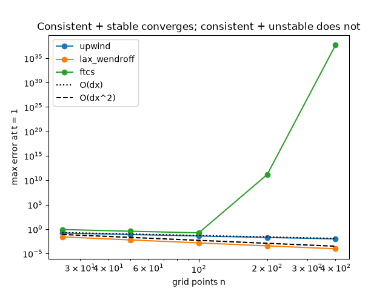

Note
Go to the end to download the full example code.
The Lax equivalence theorem: consistency + stability = convergence#
Lax and Richtmyer (1956): for a consistent linear scheme applied to a well-posed linear problem, stability is necessary and sufficient for convergence. The refinement study below shows both halves. Upwind and Lax-Wendroff are consistent and stable, and converge at their orders of accuracy. FTCS is consistent but unstable: once the grid is fine enough to need many steps, its error explodes under refinement.
import matplotlib.pyplot as plt
import numpy as np
from mathematicskit.pde import AdvectionEquation1D, max_amplification
G_NAME = {"ftcs": "ftcs_advection"} # amplification-factor name of each advection scheme
u0 = lambda x: np.sin(2 * np.pi * x)
sizes = [25, 50, 100, 200, 400]
nu = 0.8
Error at t = 1 under refinement at fixed Courant number#
fig, ax = plt.subplots()
for scheme in ("upwind", "lax_wendroff", "ftcs"):
errors = []
for n in sizes:
adv = AdvectionEquation1D(u0, n=n)
sol = adv.solve(1.0, dt=nu * adv.dx, scheme=scheme)
errors.append(np.max(np.abs(sol.final - adv.exact(1.0))))
rates = np.log2(np.array(errors[:-1]) / np.array(errors[1:]))
print(f"{scheme:>13}: max |G| = {max_amplification(G_NAME.get(scheme, scheme), nu):.4f}, observed orders {np.round(rates, 2)}")
ax.loglog(sizes, errors, "o-", label=scheme)
ax.loglog(sizes, 5.0 / np.array(sizes), "k:", label="O(dx)")
ax.loglog(sizes, 50.0 / np.array(sizes) ** 2, "k--", label="O(dx^2)")
ax.set_xlabel("grid points n")
ax.set_ylabel("max error at t = 1")
ax.set_title("Consistent + stable converges; consistent + unstable does not")
ax.legend()
plt.show()

upwind: max |G| = 1.0000, observed orders [1.02 1.01 0.99 0.99]
lax_wendroff: max |G| = 1.0000, observed orders [2.07 2.04 2. 2. ]
ftcs: max |G| = 1.2806, observed orders [ 1.18 1.08 -39.64 -88. ]
Total running time of the script: (0 minutes 0.074 seconds)